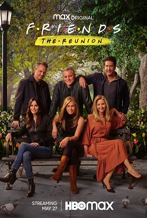
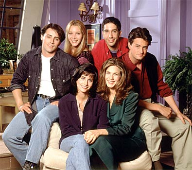
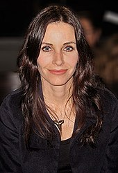
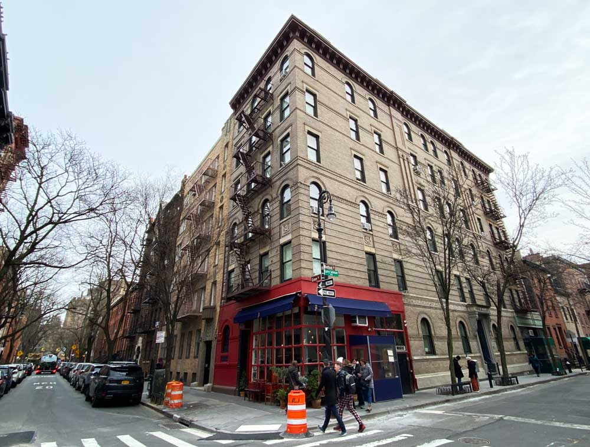
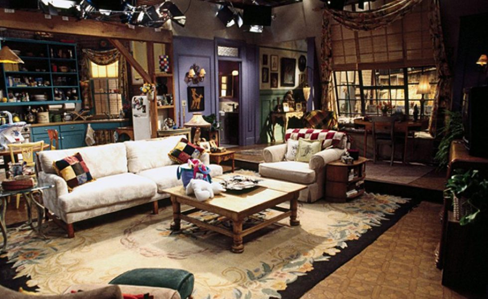
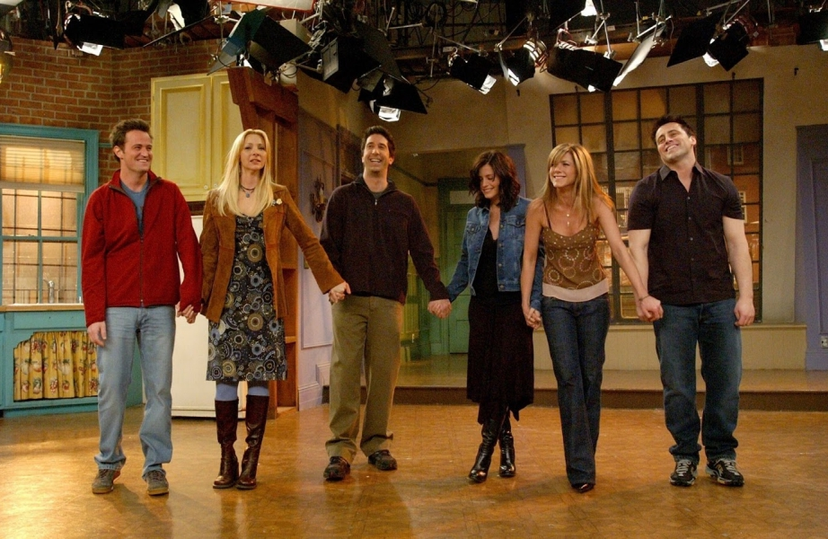
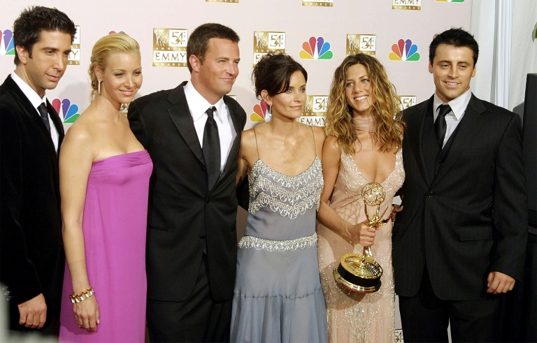
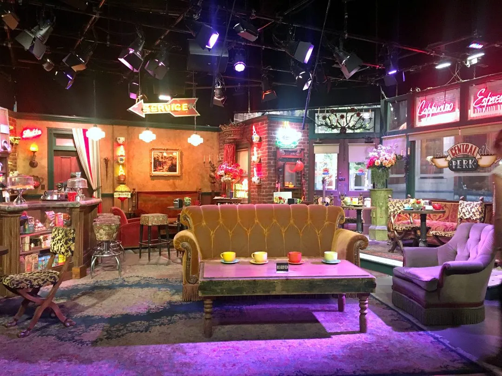

Friends é uma sitcom americana criada por David Crane e Marta Kauffman e apresentada pela rede de
televisão NBC entre 22 de setembro de 1994 e 6 de maio de 2004, com um total de 236 episódios. A série
girava em torno de um grupo de amigos que vivia no bairro de Greenwich Village, na ilha de Manhattan, na
cidade de Nova York. A série foi produzida pela Bright/Kauffman/Crane Productions em associação com a
Warner Bros Television. Os produtores executivos originais foram Crane, Kauffman e Kevin S. Bright, com
muitos outros a serem promovidos posteriormente.
Logo da série

Poster de divulgação do episódio "The Reunion"
O programa já foi transmitido em dezenas de países e as reprises de seus episódios continuam com boas
audiências. O seriado arrecadou seis Prêmios Emmy (incluindo um na categoria Emmy do Primetime
para Melhor Série de Comédia), um Globo de Ouro, dois SAG Awards, e 56 outros prêmios com 152 nomeações.
Em 2002, a revista especializada em televisão TV Guide lançou uma lista com os 50 melhores programas de
televisão de todos os tempos, e Friends constava em 21º lugar.
Em 2015 a série foi disponibilizada no serviço de streaming Netflix em diversas partes do mundo, incuindo
o Brasil. Em 1 de janeiro de 2020 a série deixou o catálogo da Netflix americana, rumo ao HBO Max,
serviço de streaming da Warner Bros, que estreiou em maio nos EUA. Em 1 de janeiro de 2021 a série saiu
da Netflix na América Latina, pelos mesmos motivos, como parte da migração de diversos conteúdos das
empresas do conglomerado WarnerMedia para o seu serviço de streaming HBO Max, lançado em junho de 2021
nos países latino-americanos.
Um episódio especial de reunião do elenco, entitulado Friends: The Reunion, foi gravado em 2021,
estreando na plataforma de streaming HBO Max a 27 de maio do mesmo ano.
Elenco

Uma fotografia promocional para lançar a primeira temporada do seriado Friends. Da
esquerda para a direita, Matt LeBlanc como Joey Tribbiani, Lisa Kudrow como Phoebe Buffay,
Courteney Cox como Monica Geller, Jennifer Aniston como Rachel Green, David Schwimmer como Ross
Geller e Matthew Perry como Chandler Bing.
Os membros do elenco principal estavam familiarizados com os telespectadores antes de seu papel em
Friends, mas não eram considerados estrelas. Cox tinha a carreira mais promissora entre o elenco
principal, quando ela foi inicialmente lançada no seriado, tendo aparecido em Ace Ventura: Pet
Detective e Family Ties. Antes de seu papel em Friends, Kudrow já tinha interpretado Ursula
Buffay em Mad About You e repetiu o duplo papel da irmã gêmea Ursula como um personagem recorrente
durante vários episódios de Friends. LeBlanc apareceu como um personagem secundário na sitcom
Married... with Children, e como personagem principal de seu spin-offs, Top of the Heap e Vinnie &
Bobby. Após o fim de Friends fez seu próprio spin-off, Joey, que foi cancelado após duas
temporadas por baixa audiência. Aniston e Perry já haviam aparecido em vários pilotos de sitcoms
mal-sucedidas antes de serem lançados em Friends. Antes de seu papel em Friends, Schwimmer
interpretara personagens secundários em The Wonder Years e NYPD Blue. Durante a décima
temporada, todos os atores já tinham alcançado o status de celebridade.
Em seus contratos originais para a primeira temporada, cada membro do elenco era pago com 22 500
dólares estadunidenses por episódio. Os membros do elenco receberam salários diferentes na
segunda temporada, entre 20 000 e 40 000 dólares por episódio. Antes das negociações de
salário para a terceira temporada, o elenco decidiu entrar em negociações coletivas, apesar da
preferência do Warner Bros. por ofertas individuais. Os atores receberam o mesmo salário do
resto elenco, ou seja, Aniston e David Schwimmer tiveram seus salários reduzidos. As estrelas eram
pagas, por episódio, em 75 000 dólares na terceira temporada, 85 000 dólares na quarta temporada,
100 000 na quinta e 125 000 por episódio na sexta temporada. O elenco recebeu salários de 750
000 dólares estadunidenses por episódio nas sétima e oitava temporadas, e 1 milhão de dólares por
episódio na nona e décima temporadas. O elenco também recebeu royalties de sindicatos na quinta
temporada.
O criador da série, David Crane, queria que todos os seis personagens
fossem igualmente
importantes e a série foi elogiada como sendo "o primeiro programa verdadeiramente
conjunto". Os membros do elenco fizeram esforços para manter o formato do conjunto e não
permitir que um dos membros dominasse a trama; eles entraram nas mesmas categorias para os
prêmios de atuação, optaram por negociações coletivas, em vez de salários individuais, e
pediram para aparecerem juntos em fotos de capas de revistas da primeira temporada.
Os membros do elenco se tornaram melhores amigos fora da tela também, e o ator convidado Tom
Selleck relatou ter tido algumas vezes a sensação de ser deixado de fora. O elenco se manteve
como bons amigos depois do fim da série, especialmente Cox e Aniston (Aniston se tornou madrinha da
filha de Cox e David Arquette, Coco). No livro comemorativo oficial de despedida da série,
Friends 'Til The End, cada ator reconheceu separadamente em suas entrevistas que o elenco se tornou
sua família.
Produção
Concepção
David Crane e Marta Kauffman começaram a desenvolver três novos pilotos para televisão que iriam
estrear no segundo semestre de 1994, depois de sua sitcom Family Album ter sido cancelada pela CBS
em 1993. Kauffman e Crane decidiram apresentar a série sobre "seis pessoas com seus 20 anos
trilhando seu caminho em Manhattan" para a NBC, pois achavam que se encaixaria melhor nesse
canal. Crane e Kauffman apresentaram a ideia ao seu parceiro de produção Kevin Bright, que
trabalhou como produtor executivo na série da HBO Dream On. A ideia para a série foi concebida
quando Crane e Kauffman começaram a lembrar do momento em que eles tinham acabado a faculdade e
começaram a viver por si só, em Nova York; Kauffman acreditava que eles estavam procurando o momento
em que o futuro era "mais um ponto de interrogação." Eles acharam esse conceito interessante,
pois acreditavam que "todo mundo sabe como é esse sentimento", e porque também era como se
sentiam sobre suas próprias vidas naquele momento. A equipe intitulou a série como Insomnia Cafe
e lançou a ideia em um projeto de sete páginas para a NBC, em dezembro de 1993.
"É sobre sexo, amor, relacionamentos, carreira, um momento em sua vida quando tudo é
possível. E é sobre amizade, porque quando você é solteiro e em uma cidade, seus amigos são sua
família."
- O tratamento original utilizado por Crane, Kauffman e Bright para lançar a série para a NBC.
Ao mesmo tempo, Warren Littlefield, o então presidente da NBC Entertainment, estava procurando uma
comédia envolvendo jovens que viviam juntos e compartilhavam suas despesas. Littlefield queria que o
grupo compartilhasse períodos memoráveis de suas vidas com seus amigos, se tornando "novos membros
de uma família substituta." No entanto, Littlefield encontrou dificuldades em trazer o conceito
para a realidade e encontrou terríveis scripts desenvolvidos pela NBC. Quando Kauffman, Crane e
Bright apresentaram Insomnia Cafe, Littlefield ficou impressionado como sabiam quem seus personagens
eram. A NBC então comprou a ideia de desenvolver um piloto, arriscando as sanções financeiras,
caso o piloto não fosse filmado. Kauffman e Crane começaram a escrever um roteiro piloto para um
seriado agora intitulado Friends Like Us, que levou três dias para ser escrito. Littlefield
queria que a série representasse a Geração X e explorasse um novo tipo de vínculo tribal, mas o trio
de criadores não compartilhavam sua visão. Crane argumentou que não era uma série para uma geração
específica e queria produzir uma série que todos gostassem de assistir. A NBC gostou do roteiro
do episódio piloto e ordenou a mudança do título da série para Six of One, devido principalmente ao
título similar partilhado pela sitcom da ABC These Friends of Mine.
Lançamento

Os produtores queriam que Courteney Cox interpretasse Rachel, no entanto, Cox se recusou
e pediu para interpretar Monica.
Depois que tornou-se evidente que a série foi um projeto que favoreceu a NBC, Littlefield relatou que
estava recebendo telefonemas de todos os agentes da cidade, querendo o seu cliente como parte do
seriado. Audições para os papéis principais ocorreram em Nova York e Los Angeles. O diretor
de elenco escolheu mil atores, que quando separados por candidatados para cada papel, caia para 75
pessoas por personagem. Aqueles que recebiam um telefonema de retorno eram novamente avaliados na
frente de Crane, Kauffman e Bright. No final de março, o número de potenciais atores foi reduzido
para três ou quatro para cada papel, e foram convidados a atuar para Leslie Moonves, então
presidente da Warner Bros Television.
Tendo trabalhado com David Schwimmer no passado, os criadores da série escreveram o personagem de
Ross com o ator em mente, sendo ele que estava em primeiro lugar. Os produtores queriam que
Courteney Cox interpretasse Rachel, porém, Cox recusou-se e pediu para interpretar Monica. Kauffman
disse que Cox tinha "essa alegre e otimista energia", que não era como eles tinham imaginado
Monica. Quando Cox fez o teste para o papel, os produtores foram surpreendidos pela sua direção
da personagem e a colocaram como parte do elenco. Quando Matt LeBlanc fez o teste para Joey, ele
colocou uma abordagem sobre o personagem. Os escritores não pretendiam, originalmente, que Joey
fosse fraco, mas acharam que iria ser uma grande fonte de comédia. LeBlanc também deu o coração do
personagem, que os escritores não perceberam que Joey tinha. Embora Crane e Kauffman não quisessem
LeBlanc para o papel, no momento, eles foram pressionados pela rede a incluí-lo no elenco.
Jennifer Aniston, Matthew Perry e Lisa Kudrow foram escolhidos com base em seus respectivos testes.
Mais mudanças ocorreram na história da série durante o processo de escolha do elenco. Os autores
tiveram que ajustar os personagens que eles haviam escrito para atender aos atores e o processo de
descoberta dos personagens ocorreu durante a primeira temporada da série. Kauffman admitiu que o
personagem Joey tornou-se "um novo ser" e que "até o episódio de Ação de Graças nós não tínhamos
percebido o quão divertidas eram as neuroses de Monica."
Enredo
Nas semanas seguintes após a NBC aceitar Friends, Crane, Kauffman e Bright reviram scripts enviados
por escritores que tinham preparado episódios originalmente para outras séries, principalmente
episódios não produzidos de Seinfeld. Kauffman e Crane contrataram uma equipe de sete jovens
escritores, porque "Quando você tem 40, você não pode fazê-lo mais. As redes e os estúdios estão
procurando jovens saindo da faculdade." Os criadores perceberam que utilizar seis personagens
iguais, em vez de enfatizar a história em um ou dois, proporcionaria uma "miríade de histórias e
daria pernas ao seriado". A maioria das ideias do enredo vieram dos escritores, embora os atores
também tenham acrescentado outras ideias. Os escritores originalmente planejaram uma grande
história de amor entre Joey e Monica, uma vez que eles estavam destinados a ser os mais sexuais
personagens da série. A ideia de um interesse romântico entre Ross e Rachel emergiu durante o
período em que Kauffman e Crane escreveram o episódio piloto.
Durante a produção do piloto, a NBC pediu que o roteiro fosse alterado para apresentar um enredo
dominante e vários outros menores, mas os escritores se recusaram, querendo manter a história em
três linhas de igual peso. A NBC achava que o elenco era muito jovem e sugeriram um personagem
mais velho que poderia dar o conselho adultos jovens. Crane e Kauffman foram obrigados a cumprir, e
escreveram um rascunho de um episódio inicial chamado "Pat the cop" (em português: Pat, o policial).
Crane achou o enredo terrível e Kauffman brincou: "Você conhece o livro de crianças Pat the Bunny?
Nós temos Pat the Cop". A NBC finalmente cedeu e deixou a ideia de fora.
Em cada verão, os produtores delineavam o enredo da temporada seguinte. Antes de um episódio
entrar em produção, Kauffman e Crane reviam o script escrito por um outro escritor, principalmente
se alguma coisa sobre qualquer série ou personagem fosse estranha. Ao contrário das outras
histórias, a ideia de uma relação entre Joey e Rachel foi decidida no meio da oitava temporada. Os
criadores não queriam que Ross e Rachel voltassem a ficar juntos tão cedo e, enquanto procuravam por
um par romântico, um escritor sugeriu o interesse romântico de Joey por Rachel. A história foi
incorporada na época, no entanto, quando os atores temeram que a história se tornaria desagradável
para seus personagens, o enredo foi descartado, até que reapareceu novamente na temporada final.
Para a nona temporada, os escritores não tinham certeza sobre a quantidade de história que iriam dar
ao bebê de Rachel, como eles não queriam que o seriado girasse em torno de um bebê, nem fingisse que
não havia qualquer criança. Crane disse que levou um tempo para aceitar a ideia de uma décima
temporada e que decidiu fazer pois eles tinham muitas histórias para contar para justificar uma nova
temporada. Kauffman e Crane não teriam assinado a uma décima primeira temporada, mesmo quando todos
os membros do elenco queriam continuar o seriado.
O formato do título do episódio-"The One with ou where..." (a.k.a. T.O.W.)- foi criado quando os
produtores perceberam que os títulos dos episódios não seriam apresentados nos créditos de abertura,
e, portanto, seriam desconhecidos para a maioria da platéia. "The One" em português "Aquele", foi
escolhido pois a série conta a história de amizade, ou seja, uma conversa no dia a dia.
Filmagem

Edíficio em Greenwich Village, Nova Iorque, que foi utilizado para representar os
apartamentos dos seis amigos.
A primeira temporada foi filmada no Estúdio 5 do Warner Bros Studios, em Burbank, Califórnia.
Executivos da NBC estavam preocupados que a decoração do café Central Perk era muito hip e
solicitaram que a série fosse definida em um jantar, mas finalmente concordaram com a conceito de
coffee house. As cenas da abertura foram filmadas em uma fonte no Rancho Warner Bros às 04h00,
enquanto estava particularmente frio naquela manhã em Burbank. No início da segunda temporada, a
produção mudou-se para o maior Estúdio 24, que foi renomeado para "The Friends Stage", após o final
da série. As filmagens para a série começaram no verão de 1994 na frente de uma platéia ao vivo,
que receberam um resumo da série para familiarizar-se com os seis personagens principais; um
comediante contratado entretinha a platéia entre as tomadas. Cada episódio de 22 minutos de
duração levou seis horas para ser filmado, o dobro do da maioria das gravações de comédia,
principalmente devido às várias revisões e reescritas dos roteiros.
Embora os produtores sempre quisessem mostrar as histórias como se os atores estivessem no local,
Friends nunca foi filmada em Nova York. Bright achava que as filmagens de episódios feitas fora do
estúdio eram menos engraçadas e que o auditório era uma parte integrante da série. Quando a
série foi criticada por representar Nova York incorretamente, quando era claro que o grupo de amigos
não teria condições de arcar as despesas de apartamentos enormes em Greenwich Village, Bright disse
que o set tinha que ser grande o suficiente para as câmeras, iluminação, e "para que o público possa
ver o que está acontecendo"; os apartamentos também precisavam proporcionar um espaço para que
os atores pudessem executar os roteiros cômicos. O final da quarta temporada foi filmado em
locações em Londres, porque os produtores estavam cientes da popularidade da série no Reino
Unido. As cenas foram filmadas em um estúdio com três platéias, cada uma composta por 500
pessoas. Estas foram as maiores audiências do programa ao longo de sua execução. O final da quinta
temporada, que se passava em Las Vegas, foi filmado em estúdios da Warner Bros., apesar de Bright
ter encontrado pessoas que pensavam que os episódios tinham sido filmados em Vegas.

Estúdio de gravação do apartamento da Monica e da Rachel
Final da série
Os criadores da série completaram a primeira versão do episódio final de uma hora de duração em
janeiro de 2004, quatro meses antes de sua exibição original. Crane, Kauffman e Bright assistiram
aos episódios finais de outras sitcoms para preparar esboço do episódio, prestando atenção ao que
funcionou e o ao que não. Eles gostaram dos que permaneceram fieis às séries, citando o final de The
Mary Tyler Moore Show como padrão. Crane, Kauffman e Bright tiveram dificuldade em escrever o final
e passaram vários dias pensando na cena final, sem serem capazes de escrever uma palavra. Eles não
queriam fazer "algo de elevado conceito ou levar a série para fora da série". As partes mais
críticas do final foram filmadas sem plateia e com uma quantidade mínima de membros. O elenco
principal gostou do final e estava confiante de que os fãs reagiriam da mesma maneira:
"Foi exatamente o que eu esperava. Nós todos acabamos com uma sensação de um novo começo e o público
teve a sensação de que é um novo capítulo na vida de todos estes personagens."
A NBC promoveu fortemente o final da série, que foi precedido por uma campanha publicitária. As
afiliadas locais da NBC organizaram festas de exibição em várias partes dos Estados Unidos,
incluindo um evento na Universal CityWalk com uma emissão especial do final em uma tela Astrovision
exterior. O final foi o tema de dois episódios da Dateline NBC, uma revista televisiva semanal,
uma das quais decorreu durante duas horas. Uma retrospectiva de uma hora de clipes de episódios
anteriores foi mostrado antes da exibição do episódio. Após a final, The Tonight Show with Jay Leno
foi filmado no set do Central Perk de Friends, local que caracterizou o elenco e os convidados da
série. As cotas de publicidade para o episódio final da série foram de US$ 2 milhões para 30
segundos do horário comercial, quebrando o recorde do final de Seinfeld, com US$ 1,7 milhão.
Nos Estados Unidos, 52,5 milhões de telespectadores assistiram ao episódio final em 6 de maio de
2004, tornando-se a transmissão de entretenimento mais vista desde o episódio final de Seinfeld, em
1998. Embora não tenha sido o episódio de série mais visto, o episódio final foi o quarto final
de série mais assistido da história da televisão, atrás apenas do final de M*A*S*H, Cheers e
Seinfeld, que foram assistidos por 105, 80,4 e 76,2 milhões de telespectadores respectivamente. O
episódio de retrospectiva foi assistido por menos de 36 milhões de espectadores e o episódio final
foi o segundo mais assistido da televisão naquele ano, atrás apenas do Super Bowl. Após os finais
de Friends e Frasier, críticos da mídia especularam sobre o destino do gênero comédia. As opiniões
expressas variaram entre uma sinalização para o fim do gênero sitcom, um pequeno declínio na grande
história do gênero, até uma redução geral da televisão de roteiro em favor aos "reality shows".

Elenco agradece após filmar a última cena da série.
Impacto
Recepção da crítica
As primeiras resenhas da série foram mistas. Tom Feran do The Cleveland Plain Dealer escreveu que a
série tratava "vagamente e com menos sucesso o estilo de Seinfeld", Enquanto Ann Hodges do
Houston Chronicle chamou a série de "o novo Seinfeld, mas nunca será engraçado como Seinfeld."
No Los Angeles Daily News, Ray Richmond disse que a série era "uma das comédias mais brilhantes da
nova temporada", e o The Los Angeles Times disse que era "a melhor série de comédia da nova
temporada ".
Ginny Holbert do Chicago Sun-Times disse que as características de Joey e de Rachel estavam
subdesenvolvidas, enquanto Richmond elogiou o elenco como um "conjunto de jovens simpáticos",
com "boa química".Robert Bianco do USA Today foi cortês com Schwimmer, chamando-o de
"fantástico". Ele também elogiou as mulheres, mas estava preocupado com o papel de Perry como
Chandler, dizendo que era "indefinido" e que LeBlanc "confiou demais na rotina de garanhão sem
cérebro que já estava cansativa nas últimas duas vezes que ele tentou fazer". Os autores de
Friends Like Us: The Unofficial Guide to Friends disseram que o elenco estava "tentando um pouco
demais", em particular Perry e David Schwimmer.
À medida que a série progredia, mais opiniões tornaram-se positivas, e Friends se tornou uma das
sitcoms mais populares do seu tempo. Os críticos elogiaram a série como tendo uma escrita
consistente e química entre os atores principais. Noel Holston do Newsday, que havia julgado
improcedente o piloto como uma "eu quero ser Seinfeld", em 1994, repudiou sua revisão anterior,
depois revendo o episódio, escrevendo um pedido de desculpas aos autores. Heather Havrilesky do
Salon.com disse que a série "encontrou seu rumo" na segunda temporada. Havrilesky achou que as
piadas dos personagens e que outras situações específicas "poderiam fazer você rir em voz alta
algumas vezes em cada episódio" e a qualidade da escrita permitiu que a história fosse "original e
inovadora." Bill Carter, do The New York Times chamou a oitava temporada de um "retorno
verdadeiramente espectacular". Carter disse que "gerando novas linhas de história e risos de altos
decibéis", a série fez o seu caminho "de volta aos corações de seus fãs."
No entanto, Liane Bonin da Entertainment Weekly considerou que a direção da nona temporada foi
"decepcionante". Apesar de decepcionada com a temporada, Bonin assinalou que "a escrita [era]
mantinha o seu pique". Havrilesky disse que a décima temporada foi "alarmantemente terrível,
muito pior do que você jamais iria imaginar numa série que já foi tão boa". Friends foi destaque
na lista da Time "Os 100 Melhores Programas de Televisão de Todos os Tempos", dizendo: "o segredo
escondido desta série é que ele se chamava Friends e realmente foi sobre a família".
Críticas sobre o final da série foram mistas a positivas. Robert Bianco do USA Today descreveu o
final como divertido e gratificante, e elogiou-o pela emoção habilmente misturada com humor e ao
mesmo tempo apresentando cada uma das estrelas. Sarah Rodman do Boston Herald elogiou Aniston e
David Schwimmer pelas suas atuações, mas sentiu que a reunião de seus personagens foi "demasiada
arrumada, mesmo que tenha sido o que mais queriam as legiões de fãs da série."
Premiações
Para preservar o formato de "série de grupo", os membros do elenco principal decidiram inscrever-se
nas mesmas categorias de prêmios de atuação. Começando com a oitava temporada da série, os
atores decidiram apresentar-se na votação de ator principal, ao invés dos campos de melhor ator
coadjuvante. A série foi indicada a 63 Primetime Emmy Awards, vencendo seis. Aniston e Lisa
Kudrow são os únicos membros do elenco principal que ganharam um Emmy, enquanto Cox foi a única
atriz que não foi indicada. A série ganhou o Emmy de 2002 na categoria de "Melhor série de comédia",
com nomeações em 1995, 1996, 1999, 2000 e 2003. A série também ganhou um American Comedy
Award, um GLAAD Media Award, um Golden Globe Award, três Logie Awards, seis
People's Choice Awards, um Satellite Award e um Screen Actors Guild Awards.

Elenco com o prêmio Emmy Awards de 2002 na categoria de "Melhor série de comédia"
Impacto cultural
Embora os produtores imaginaram Friends como "apenas um programa de TV", vários psicólogos
pesquisaram o impacto cultural da série durante o seu tempo de exibição. O penteado Aniston foi
apelidado de "The Rachel" e copiado em todo o mundo. A frase de Joey, "How you doin'?" (em
português: Como você está?), tornou-se uma expressão popular da gíria do inglês ocidental, muitas
vezes usada como uma saudação de amigos. A série também impactou o idioma inglês, de acordo com
um estudo realizado por um professor de linguística da Universidade de Toronto. O professor
descobriu que os personagens usaram a palavra inglesa "so" de modificar adjetivos mais
frequentemente do que outros intensificadores, como "very" e "really". Embora essa preferência já
tivesse aparecido no vernáculo estadunidense, a série pode ter acelerado essa mudança. Na
sequência dos atentados de 11 de setembro de 2001, as avaliações da série aumentaram 17% em relação
à temporada anterior.

Set de gravação do Central Perk, no Warner Bros. Studios.
Friends foi parodiado na décima segunda temporada de Murder, She Wrote no episódio "Assassinato Entre
Amigos". No episódio, a detetive amadora Jessica Fletcher (Angela Lansbury) investiga o assassinato
de um escritor para Buds, uma série televisiva de ficção sobre o cotidiano de um grupo de amigos da
cidade. O episódio foi planejado após a CBS mudar Murder, She Wrote de seu intervalo de tempo
regular na noite de domingo para quinta-feira, em confronto direto com Friends na NBC. Jerry
Ludwig, o escritor do episódio, pesquisou o "sabor" de Buds assistindo episódios de Friends.
O Central Perk café, um dos principais cenários da série, inspirou várias imitações no mundo inteiro.
Em 2006, o empresário iraniano Mojtaba Asadian iniciou uma franquia do Central Perk e registrou o
nome em 32 países. A decoração das casas de café é inspirada em Friends, com réplicas dos sofás,
contadores, sinalização de néon e tijolos. As casas de café também contêm pinturas de vários
personagens da série e televisões com episódios Friends. James Michael Tyler, que interpreta
Gunther, o gerente do Central Perk na série, participou da inauguração do café de Dubai, onde ele
trabalhou como garçom. O Central Perk foi reconstruído como parte de uma exposição de museu no
Warner Bros Studios e foi mostrado no The Ellen DeGeneres Show em outubro de 2008 e Jennifer Aniston
revisitou o set pela primeira vez desde o final da série em 2004. De 24 a 7 de outubro de 2009
uma réplica do Central Perk ficou instalada na Broadwick Street, Soho, em Londres. A casa de café
vendeu café real para os visitantes e apresentou uma exposição de adereços de Friends, tais como a
Geller Cup do episódio da terceira temporada "Aquele do Futebol Americano". Em 2009, um remix
da música "Smelly Cat" se tornou um popular fenômeno da internet. Em Pequim, na República
Popular da China, o empresário Du Xin abriu uma lanchonete chamada "Central Perk", baseada no café
de Friends.
Tema de abertura
O tema de abertura de Friends é uma canção de The Rembrandts, banda de Danny Wilde e Phil Solem. Os
Rembrandts estavam elaborando um novo álbum em 1994. Antes de seu lançamento, a dupla tinha,
anonimamente, gravado uma música tema para um programa de TV. A música que gravaram, "I'll Be There
for You", esteve entre as músicas mais pedidas na rádio (mesmo apenas como um tema de 32
segundos). Foram obrigados (pela gravadora) a adicionar uma versão de corpo inteiro da música
para seu terceiro disco, L.P., de 1995. "I'll Be There for You" se tornou uma canção presente
nas rádios e que atingiu #17 no Hot 100; com o disco atingindo posição #23 na Billboard
200. L.P., o disco lançado com a referida música, se tornou disco de platina.